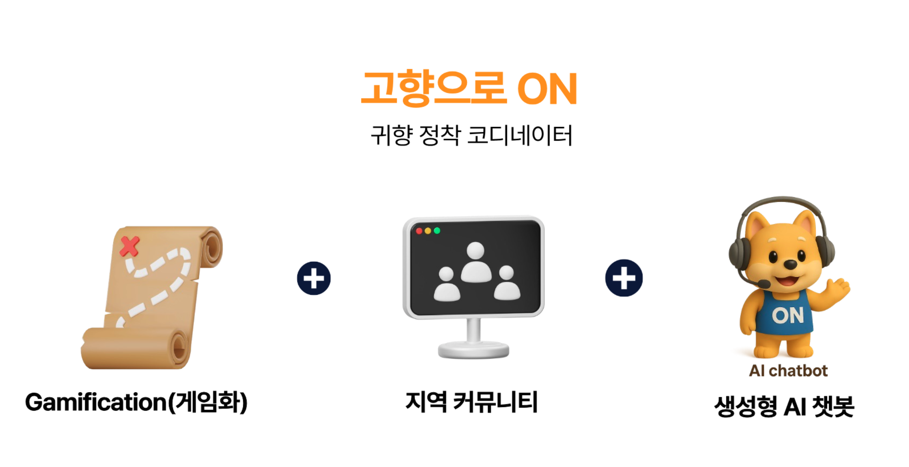
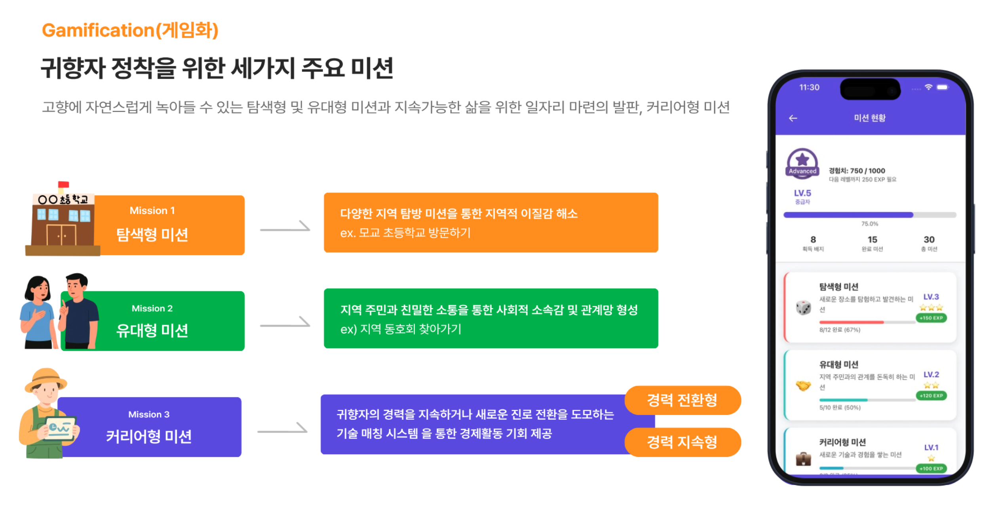
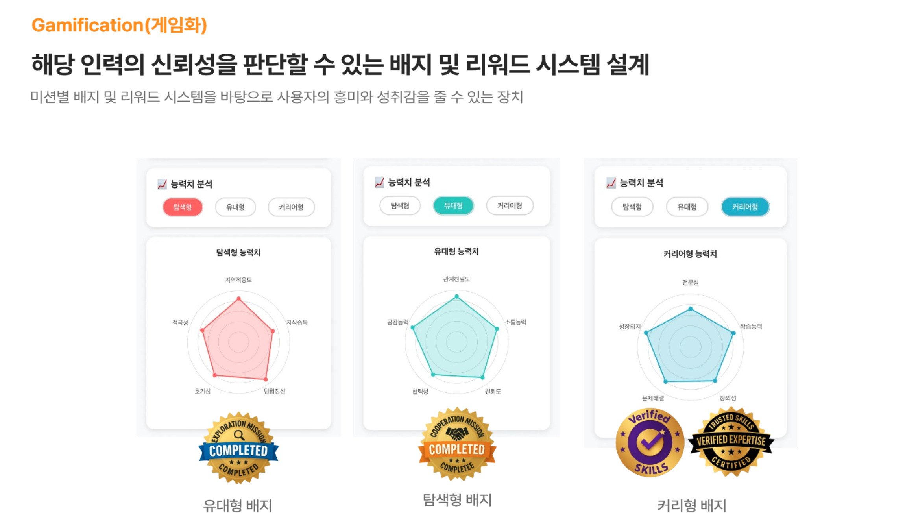
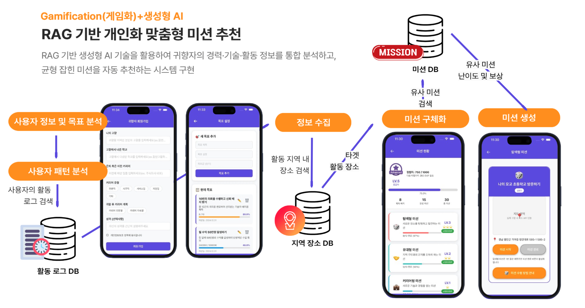
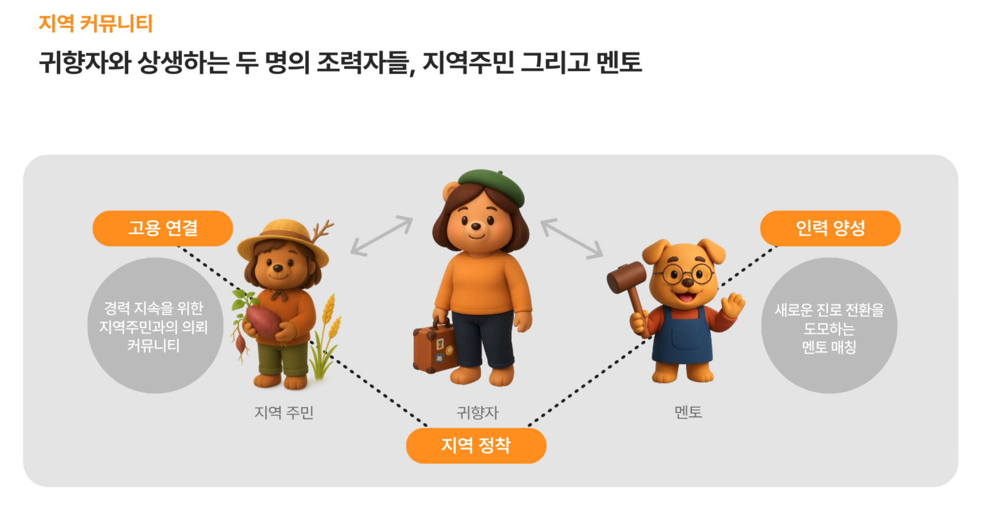
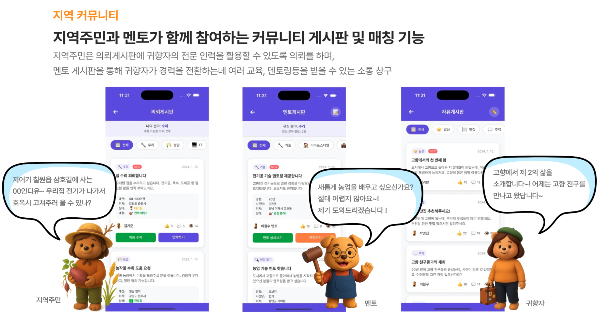
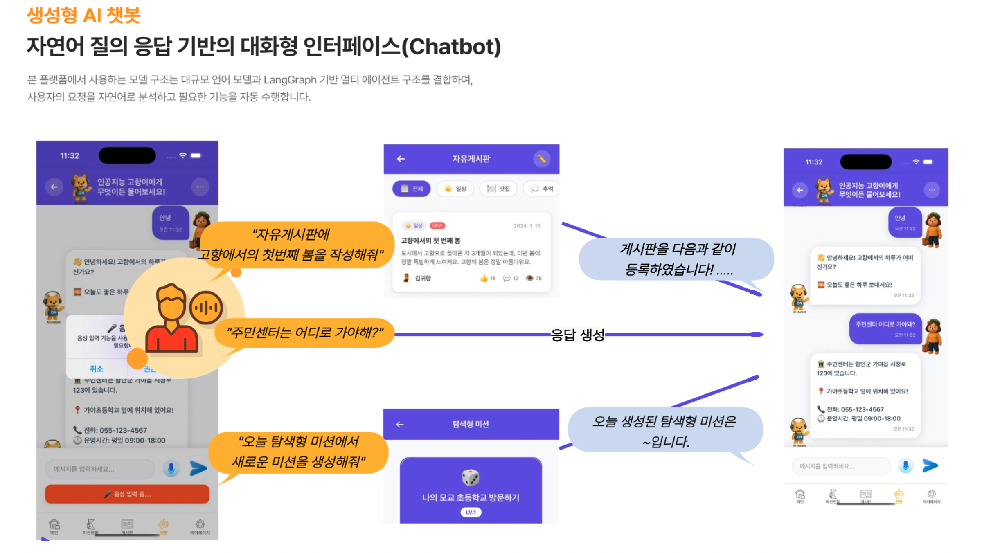

📌 프로젝트 목표
- 본 프로젝트의 목표는 지방 소멸 문제, 고령화, 도시 집중으로 인한 인구 불균형 문제를 디지털 기술로 해결하는 것
(본 해커톤의 지정과제 - 지역균형 발전을 위한 디지털 사회 서비스 개발) - 특히 40~64세 장년층 귀향자를 대상으로,
- 지역 탐색
- 관계 형성
- 직업/기술 기반 경제활동
- 지역사회 참여
- 해당 플랫폼은
- RAG 기반 개인 맞춤형 미션 추천
- LLM + Multi-Agent 기반 대화형 인터페이스
- 기술 인증·멘토링·지역 게시판 등 지역 생태계 통합 기능
📌 Why This Project?
- 지방 소멸과 인구 불균형의 심화:전국 시군구 절반 이상이 ‘소멸 위험 지역’으로 분류될 정도로 지방 인구 감소가 심각
- 귀농 감소·귀촌 증가 → 새로운 정착 유형 등장
- 기존 플랫폼의 한계 (“정보 제공 수준” 정도): AI 기반 맞춤형 추천·기술 인증·커뮤니티 연결 기능이 부족하여
실제 정착까지 이어지지 못하는 상황
📌 My Main Contributions
- 프로젝트 기획 및 전체 컨셉 설계 (Core Concept Planning)
- React Native 기반 프론트엔드
📌 Application 소개

🔍 Gamification: RAG 기반 개인 맞춤형 미션 추천 시스템 설계
- 정착을 위한 세가지 주요 미션
- 탐색형 미션: 고향과의 “정서적 유대 회복”을 목표로 하는 미션
- 유대형 미션:지역 주민과의 상호작용을 통해 “커뮤니티 소속감”을 형성하는 미션
- 커리어형 미션>: 귀향자의 기술·전문성·경험을 지역 문제 해결에 활용하는 활동
- 배지 및 리워드 시스템 설계
- 배지(Badge)시스템: 사용자의 전문성·신뢰도·활동 실적을 시각적으로 표현하는 핵심 요소
- 보상(Reward) 시스템: 포인트 기반 실질적 혜택 제공 구조(누적 활동 포인트 → 지역 상점·서비스와 연계된 보상 제공)
- RAG 기반 개인 맞춤형 미션 추천
- 사용자 기본정보(기술/동기) + 활동 로그(완료/거절 패턴) + 관심지역 + 과거 유사 미션을 통합해 추천하는 구조를 설계
- 미션 다양성·균형·난이도 조절을 위한 평가 요소(유사도, 목표 반영률, 제약 조건 충족률 등)를 구조화



🔍 지역 커뮤니티
- 3가지 유형의 커뮤니티 참여자(귀향자, 지역주민, 멘토)
- 참여자에 따른 3가지 형태의 게시판
- ✅ 의뢰 게시판 (지역 주민 요청 공유 공간)
- ✅ 멘토링 게시판 (지역 멘토 – 귀향자 연결 기능)
- ✅ 귀향자 자유 게시판


🔍 Multi-Agent 기반 대화형 AI 흐름 구조 설계
- 사용자의 자연어 질의 → 의도분류 → 에이전트 분기 → 결과 생성으로 이어지는 end-to-end 대화 흐름 설계를 주도
- 미션 생성 agent, 게시글 agent, 정보 조회 agent 등 역할형 에이전트 구조 설계
